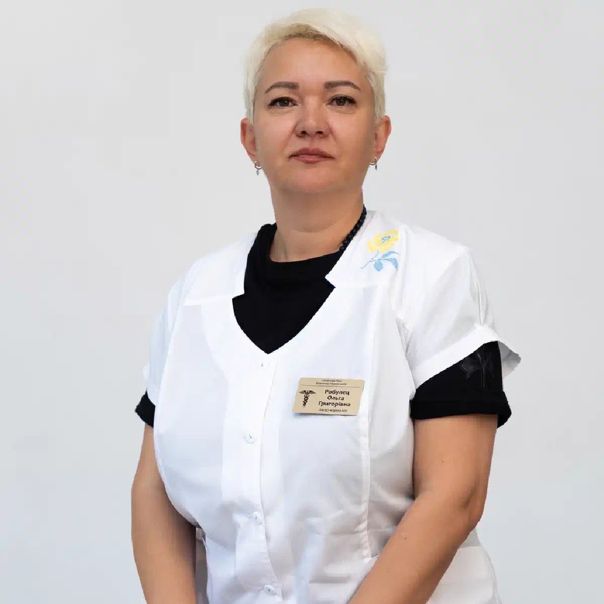

+38(068) 79 72 782
+38(068) 79 72 782Лікарня для алкоголіків у Харкові
Цілодобова допомога на кожному етапі лікування


Безкоштовна консультація, працюємо цілодобово 24/7
Цілодобова допомога на кожному етапі лікування

Дата написання: 18 вер. 2026 р.
Останнє оновлення: 19 вер. 2026 р.
Алкогольна залежність може протікати по-різному. В одних випадках стан пацієнта дає змогу проводити лікування амбулаторно або вдома, в інших потрібне постійне медичне спостереження. Лікарня для алкоголіків у Харкові може бути необхідною при тривалому запої, вираженому абстинентному синдромі, тяжкій інтоксикації, повторних зриваннях або підвищеному ризику ускладнень. Стаціонарне лікування дає змогу цілодобово контролювати стан пацієнта, проводити інфузійну та медикаментозну терапію, своєчасно коригувати лікування та за необхідності залучати лікарів різних спеціальностей.
Госпіталізація потрібна не кожній людині, яка вживає алкоголь. Рішення залежить від тривалості запою, загального стану пацієнта, віку, супутніх захворювань і вираженості синдрому відміни. Лікування в лікарні бажано розглядати, якщо людина перебуває у тривалому запої, сильно зневоднена, практично не їсть, не може самостійно вживати рідину або стан швидко погіршується після припинення вживання алкоголю. Особливо важливим є стаціонарне спостереження за наявності захворювань серця, печінки, нирок, цукрового діабету та інших хронічних патологій. Якщо з’являються судоми, галюцинації, виражена сплутаність свідомості, порушення дихання, втрата свідомості або сильне психомоторне збудження, потрібна екстрена наркологічна допомога.
Наркологічний стаціонар є кращим за домашнє лікування, коли неможливо безпечно контролювати стан пацієнта поза медичним закладом. Одним з основних показань може бути тяжка алкогольна абстиненція. Після різкого припинення тривалого вживання стан іноді погіршується не одразу, тому навіть тимчасове полегшення не виключає подальшого розвитку ускладнень. Стаціонар також може бути доцільним при повторних невдалих спробах вийти із запою, вираженій слабкості, частому блюванні, нестабільному артеріальному тиску, порушеннях серцевого ритму, психічних змінах і потребі в цілодобовому спостереженні.
Проблеми, пов’язані з вживанням алкоголю, можуть виникнути вночі, рано-вранці, у вихідний або святковий день. Тому можливість цілодобового звернення особливо важлива при гострому погіршенні стану. Цілодобова лікарня для лікування алкоголізму дає змогу провести первинний огляд, визначити ступінь тяжкості стану та вирішити питання про необхідність госпіталізації незалежно від часу доби. Якщо стан не дає змоги безпечно доставити людину самостійно, необхідно звернутися по термінову медичну допомогу при алкогольній інтоксикації.
Перед госпіталізацією оцінюється поточний стан пацієнта. Лікар уточнює, скільки днів тривало вживання алкоголю, коли була остання доза спиртного, які симптоми виникли та які захворювання має людина. Оцінюються свідомість, дихання, пульс, артеріальний тиск, ступінь зневоднення, наявність тремору, нудоти, блювання, тривоги, збудження та інших симптомів. Після огляду визначається необхідний обсяг медичної допомоги. За можливості лікування запою в стаціонарі пацієнта розміщують під наглядом медичного персоналу, після чого розпочинається терапія.
Лікування алкоголізму в стаціонарі в Харкові може включати кілька послідовних етапів. Початкове завдання — стабілізувати фізичний стан людини. За необхідності проводиться детоксикація від алкоголю, корекція зневоднення та електролітних порушень, симптоматичне лікування й спостереження за динамікою стану. Після усунення гострих проявів можна переходити до подальшого лікування залежності. До програми можуть включатися консультації нарколога, психотерапія, медикаментозна підтримка, робота з потягом до спиртного та підготовка до реабілітації.
Виведення із запою в стаціонарі особливо актуальне після тривалого вживання алкоголю або за високого ризику ускладнень. У лікарні пацієнт перебуває під медичним контролем, що дає змогу спостерігати за змінами тиску, пульсу, свідомості та інших показників. Лікар може коригувати лікування залежно від реакції організму. Такий підхід особливо важливий, якщо стан людини нестабільний або раніше вже виникали тяжкі прояви алкогольної абстиненції.
Детоксикація від алкоголю в стаціонарі спрямована на корекцію порушень, що виникли внаслідок вживання алкоголю та подальшого синдрому відміни. Вона може включати інфузійну терапію, відновлення рівня рідини та електролітів, вітамінну підтримку та симптоматичне лікування за медичними показаннями. Склад терапії підбирається індивідуально. Універсальної крапельниці, яка підходить кожному пацієнту, не існує. Стаціонарне спостереження дає змогу оцінювати результат лікування та своєчасно реагувати на появу нових симптомів.
Існують стани, за яких обмежуватися домашньою допомогою небезпечно. До тривожних симптомів належать втрата свідомості, судоми, галюцинації, виражена дезорієнтація, агресія, порушення дихання, біль у грудях, сильні коливання артеріального тиску та багаторазове блювання. Також підвищеної уваги потребують виражене зневоднення, неможливість вживати рідину, різке погіршення загального стану та тяжка абстиненція після тривалого запою. За таких симптомів необхідно терміново звертатися по медичну допомогу.
Програма лікування визначається після огляду пацієнта та залежить від його стану. На першому етапі можуть проводитися обстеження, контроль життєво важливих показників, інфузійна терапія та медикаментозна корекція симптомів. Після стабілізації стану до програми лікування можуть включатися:
Завдання лікування полягає не лише в усуненні наслідків чергового запою, а й у зниженні ризику його повторення.
Одна з переваг стаціонару — можливість регулярно оцінювати стан пацієнта. Медичний персонал контролює самопочуття людини, зміни свідомості, пульсу, тиску та інших показників, які мають значення для безпеки лікування. Особливо важливим є спостереження в перші дні після припинення тривалого вживання алкоголю, коли ризик ускладнень може зберігатися навіть після початкового покращення.
Крапельниця від алкоголю в Харкові може використовуватися як частина лікування після тривалого вживання спиртного. Склад крапельниці визначається лікарем після огляду. Враховуються ступінь зневоднення, тиск, пульс, супутні захворювання, тривалість вживання та вираженість симптомів. Крапельниця сама по собі не є лікуванням алкогольної залежності. Вона вирішує певні медичні завдання на етапі стабілізації стану, після чого необхідно визначити подальший план лікування.
Після тяжкого запою людина може відчувати виражену слабкість, тремор, тривогу, безсоння, порушення апетиту та загальне погіршення самопочуття. У перші дні головним завданням є безпечна стабілізація стану. Після цього важливо не припиняти лікування одразу після зникнення гострих симптомів. Наступним етапом може стати лікування алкогольної залежності, оскільки усунення інтоксикації не виключає ймовірності нового запою.
При хронічній алкогольній залежності лікування зазвичай потребує комплекснішого підходу, ніж одноразова детоксикація. У людини можуть повторюватися запої, збільшуватися кількість вживаного алкоголю, формуватися виражений потяг і погіршуватися фізичне здоров’я. Стаціонар дає змогу спочатку стабілізувати стан, а потім перейти до лікування хронічного алкоголізму. За необхідності програма може доповнюватися психотерапією, медикаментозною підтримкою та реабілітацією.
Регулярне повернення до запоїв свідчить про те, що одного зняття інтоксикації недостатньо. Після чергового виведення із запою важливо з’ясувати, які обставини призводять до повторного вживання алкоголю. Це можуть бути сильний потяг, стрес, порушення сну, сімейні конфлікти, повернення до колишнього оточення або припинення подальшого лікування після детоксикації. У стаціонарі можна одночасно стабілізувати стан пацієнта та почати формувати подальший план лікування залежності.
Судоми та порушення свідомості після тривалого вживання алкоголю є небезпечними симптомами. У такій ситуації не можна обмежуватися звичайною крапельницею від запою вдома або очікувати, що стан мине самостійно. Пацієнту потрібна термінова медична оцінка та, як правило, лікування в умовах стаціонару. До огляду лікаря не слід самостійно давати людині випадково обрані седативні препарати або намагатися вводити ліки без призначення фахівця.
Алкогольний делірій — тяжкий стан, який може розвиватися після припинення тривалого вживання алкоголю. У людини можуть з’являтися сплутаність свідомості, дезорієнтація, виражене збудження, галюцинації, порушення сну та різкі зміни поведінки. Лікування алкогольного делірію потребує стаціонарної допомоги та медичного спостереження. Намагатися самостійно лікувати такий стан вдома небезпечно. При появі характерних симптомів необхідно якомога швидше викликати медичну допомогу.
Після стабілізації фізичного стану можна переходити до роботи з психологічними механізмами алкогольної залежності. Психотерапія при алкоголізмі допомагає пацієнту зрозуміти, які обставини підтримують вживання алкоголю, навчитися розпізнавати ситуації підвищеного ризику та працювати з потягом до спиртного. Також може проводитися робота з мотивацією, тривогою, емоційними проблемами та наслідками повторних зривів. Психотерапія є важливою частиною подальшого лікування, але при тяжкій абстиненції вона не замінює медичну допомогу.
Кодування від алкоголізму в Харкові може розглядатися після завершення гострого етапу лікування та досягнення необхідного періоду тверезості. Проводити подібні процедури під час алкогольного сп’яніння не можна. Перед кодуванням пацієнт проходить консультацію, під час якої оцінюється стан здоров’я, наявність протипоказань і готовність людини до обраного методу. Кодування рекомендується розглядати як один із компонентів лікування, а не як універсальну заміну психотерапії та реабілітації.
Після виписки лікування алкогольної залежності не обов’язково закінчується. Реабілітація після лікування алкоголізму допомагає закріпити зміни, досягнуті в стаціонарі, та зменшити ймовірність повернення до попередньої моделі поведінки. Робота може включати індивідуальну та групову психотерапію, відновлення соціальних навичок, підтримку родичів, роботу з потягом і профілактику зривів. Чим раніше формується план подальшого спостереження, тим менша ймовірність, що після виписки пацієнт залишиться сам на сам зі звичними тригерами.
Тривалість стаціонарного лікування неможливо визначити однаково для всіх пацієнтів. Вона залежить від тяжкості стану, тривалості запою, вираженості синдрому відміни, супутніх захворювань і реакції організму на лікування. Деяким пацієнтам потрібен лише період медичної стабілізації. При хронічній залежності або необхідності реабілітації лікування може тривати значно довше. Точні терміни визначаються лікарем після оцінки стану та динаміки лікування.
Конфіденційність є важливою умовою для багатьох пацієнтів. Анонімне лікування алкоголізму може організовуватися з дотриманням принципів медичної конфіденційності. До госпіталізації пацієнт або його родичі можуть уточнити умови оформлення, зберігання медичної документації та надання довідок. Важливо заздалегідь розуміти, який формат лікування надає конкретний медичний заклад.
Страх постановки на облік нерідко стає причиною відмови від звернення по допомогу. При зверненні по лікування алкоголізму без постановки на облік умови ведення документації, надання інформації та оформлення медичних висновків необхідно уточнювати до початку лікування. Сам факт звернення до приватного медичного закладу не слід автоматично ототожнювати з диспансерним спостереженням. За необхідності отримання офіційної довідки або проходження певних комісій можуть діяти окремі правила.
Людина може відкладати лікування через побоювання, що про проблему дізнаються колеги, знайомі або родичі. Анонімна наркологічна допомога в Харкові дає змогу обговорювати стан пацієнта та програму лікування безпосередньо з медичними фахівцями з дотриманням конфіденційності. Під час стаціонарного лікування інформація про діагноз і стан здоров’я пацієнта належить до медичної інформації та має оброблятися з дотриманням відповідних вимог. Перед госпіталізацією можна додатково уточнити організаційні умови перебування.
При тривалому запої госпіталізація може бути необхідною, якщо стан людини потребує медичного спостереження. Однак необхідність лікування та можливість госпіталізації визначаються не лише кількістю днів вживання, а й станом свідомості, вираженістю абстиненції, наявністю ускладнень і супутніх захворювань. Якщо пацієнт здатний ухвалювати рішення та його стан не належить до екстрених, лікування зазвичай проводиться за його участю та згодою. За безпосередньої загрози життю необхідно звертатися по екстрену медичну допомогу при алкоголі.
Відмова від лікування — поширена проблема при алкогольній залежності. Тиск, погрози та постійні конфлікти не завжди допомагають змінити ситуацію. Часто кориснішою стає мотиваційна бесіда із залежним та консультація фахівця для родичів. Під час такої роботи людині пояснюють можливі наслідки подальшого вживання, варіанти лікування та етапи допомоги. Якщо на тлі вживання алкоголю з’являються порушення свідомості, судоми, виражена агресія, галюцинації або інші ознаки небезпечного стану, необхідно звертатися по екстрену медичну допомогу.
Головна відмінність полягає в рівні медичного спостереження. Лікування алкоголізму вдома може розглядатися, коли стан пацієнта відносно стабільний і лікар не виявляє ознак, які потребують стаціонарного спостереження. У стаціонарі доступне тривале спостереження та можливість швидше коригувати лікування у разі зміни стану. Стаціонар є кращим варіантом при тяжкій абстиненції, тривалому запої, судомах, делірії, порушенні свідомості, серйозних супутніх захворюваннях та інших станах, коли домашня допомога недостатньо безпечна.
Вартість лікування алкоголізму в лікарні в Харкові починається від 2199 грн.
| Популярні послуги | Ціна |
|---|---|
| Нарколог Харків | Від 1500 грн |
| Крапельниця від алкоголю | Від 2199 грн |
| Виведення із запою вдома | Від 2199 грн |
| Кодування від алкоголізму | Від 6000 грн |
Послідовний підхід передбачає роботу не лише з наслідками чергового вживання, а й із самою залежністю. Комплексне лікування алкоголізму в Харкові може включати медичну стабілізацію, виведення із запою, детоксикацію, спостереження нарколога, медикаментозну терапію, психотерапію, кодування за показаннями та подальшу реабілітацію. Зміст програми залежить від стану та потреб конкретного пацієнта. Після усунення гострих симптомів важливо заздалегідь визначити подальші кроки, оскільки покращення самопочуття після детоксикації ще не означає усунення алкогольної залежності.
Під час звернення бажано повідомити фахівцю основну інформацію про стан людини: вік, тривалість запою, час останнього вживання алкоголю, наявні симптоми та хронічні захворювання. Якщо пацієнт приймає ліки або раніше проходив лікування алкогольної залежності, про це також необхідно повідомити лікаря. Після первинної оцінки визначається, чи можна безпечно надати допомогу вдома, чи потрібна госпіталізація. При судомах, втраті свідомості, галюцинаціях, тяжкому порушенні дихання, вираженій дезорієнтації або іншому різкому погіршенні стану необхідно не відкладати звернення по екстрену медичну допомогу.
Телефон для консультации и вызова нарколога на дом в Харькове: +38(050-021-69-57)

Статтю перевірено експертом
Богоденко Костянтин
Лікар-анестезіолог, ординатор
Можливо цікава стаття:
Чорне блювання після алкоголю - що це може означати

Так, ми суворо дотримуємося повної конфіденційності на всіх етапах лікування. Інформація про пацієнта, діагноз та проходження терапії не передається третім особам. Звернення до нас не тягне за собою постановку на облік. Ви можете бути впевнені у безпеці та анонімності.
Програма лікування розробляється індивідуально після консультації з фахівцем. Враховуються вид залежності, її тривалість, фізичний та психологічний стан пацієнта. Такий підхід дозволяє підвищити ефективність терапії та знизити ризик зриву. Ми не використовуємо шаблонні рішення.
Так, ми супроводжуємо пацієнтів і після основного курсу лікування. Проводяться консультації, рекомендації щодо адаптації та профілактики рецидивів. За потреби можлива подальша психологічна підтримка. Це допомагає зберегти результат та повернутися до повноцінного життя.
Анонимно

Ну в хлопців просто золоті руки й світла голова, мене капали Олексій та Владислав, буквально за декілька сеансів я наче заново народився, до цього пив більше 3х тижнів, не міг зупинитись, дуже радий що знайшов саме цих спеціалістів, всім рекомендую
Анонимно
В течение нескольких лет я злоупотреблял алкоголь, что привело к увольнению с работы и вызвало у меня мысли о суициде. Понимая, что такой образ жизни неприемлем, я обратился за помощью в клинику “Амбрела”. Здесь я смог преодолеть свою зависимость от спиртного благодаря заботливым и опытным врачам, а также эффективной системе лечения. Спустя более года я полностью избавился от желания употреблять алкоголь, и теперь моя жизнь вернулась в норму. Я даже не приближаюсь к спиртному! Благодарю врачей клиники “Амбрела” за их помощь и заботу.
Анонимно
Я обращался за помощью в различные клиники, пытаясь избавиться от своей зависимости от алкоголя, но без особых успехов. Никак не мог справиться с желанием прибегнуть к бутылке, пока друг не посоветовал мне обратиться в центр “Амбрелла”. Я записался на прием и был поражен заботливым отношением к пациентам. Уже прошло два года, и теперь я смотрю на алкоголь с абсолютной равнодушием, активно занимаюсь спортом и улучшил отношения в семье. Благодаря центру “Амбрелла” моя жизнь была спасена от алкогольной зависимости!
Анонимно
Хочу выразить свою благодарность врачам из центра алкоголизма “Амбрела” за то, что они буквально спасли мою жизнь. В течение последнего года я сильно увлекался питьем, и все это привело к катастрофическим последствиям. Хотя я ходил на терапевтические сеансы, но безрезультатно. Тогда я нашел адрес клиники “Амбрела” в интернете, изучил отзывы и информацию о центре, и записался на прием. Там мне сразу предложили методику лечения, которая помогла не только справиться с физической ломкой, но и психической зависимостью от алкоголя. Не буду распространяться, скажу только одно - после пребывания в этой клинике я стал другим человеком, и навсегда забыл, что такое привкус алкоголя. Больше меня не тянет на это! Я искренне верю, что в центре “Амбрела” трудятся настоящие целители душ!
Анонимно
После сложного развода мой сын начал подавлять свою обиду и горе употреблением алкоголя. Он старался скрывать это от меня, но я, как мать, почувствовала, что что-то не так. В конечном итоге, ситуация стала критической. Моя знакомая посоветовала мне обратиться в клинику “Амбрела”. Я была приятно удивлена их работой! Они помогли сыну преодолеть очередной период злоупотребления алкоголем, и с тех пор прошел уже более года, и он совсем не пьет.
Анонимно
Благодаря вашей помощи, моя семья была спасена. Я с трудом уговорила мужа начать лечение, и последний каплей был пьяное ДТП. К счастью, в аварии никто не пострадал, но это был для него сигнал к действию. Он наконец согласился пройти курс лечения на дому, в стационар не хотел ложиться. Лечение было трудным, и были моменты, когда срыв был настолько близок, но благодаря вашему центру Амбрелла мы справились с этим.
Анонимно
Для меня эта клиника стала настоящим спасением! Долгое время я упорно отказывался от лечения, уверен был, что со мной все в порядке. Но к счастью, семья уговорила меня попробовать. И сегодня я чувствую себя невероятно счастливым, осознавая, что мне абсолютно не нужен алкоголь. Огромное спасибо за помощь и поддержку, которые я получил здесь! Я благодарен вам за новую возможность жить полноценной и счастливой жизнью!
Анонимно
Выражаю благодарность ребятам, которые оказали мне помощь и не отвернулись. Уже 10 месяцев я остаюсь чистой. Благодарю за то, что помогли найти новый путь в моей жизни.
Номер телефону:
+380 (68) 797 27 82
+380 (50) 021 69 57
Адресу наркологічного центра вашого міста уточнюйте за
телефоном
Працюємо: Київ, Одеса, Львів, Харків, Дніпро, Запоріжжя,
Черкасах, Чугуєві, Чорноморську, Кам'янському
Telegram: t.me/umbrellaplus
Графік работы: Цілодобово